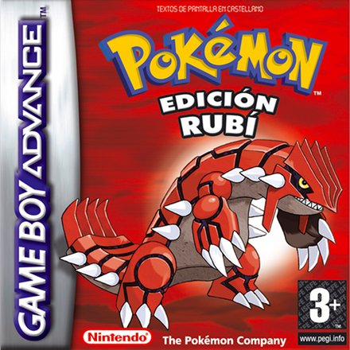
Pokémon Rubí
Game Boy Advance · 2002
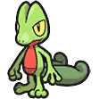
Treecko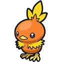
Torchic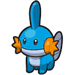
MudkipRegión de Hoenn · Rubí y Zafiro (2002)
Aquí va la introducción a la región de Hoenn: dónde está, cómo es y qué la hace especial.
Aquí puedes contar la historia de la región: su pasado, sus leyendas, sus villanos, la Liga Pokémon...
Y aquí lo que vive el protagonista: sale de su pueblo, recibe su primer Pokémon de el Profesor Abedul y empieza su viaje.
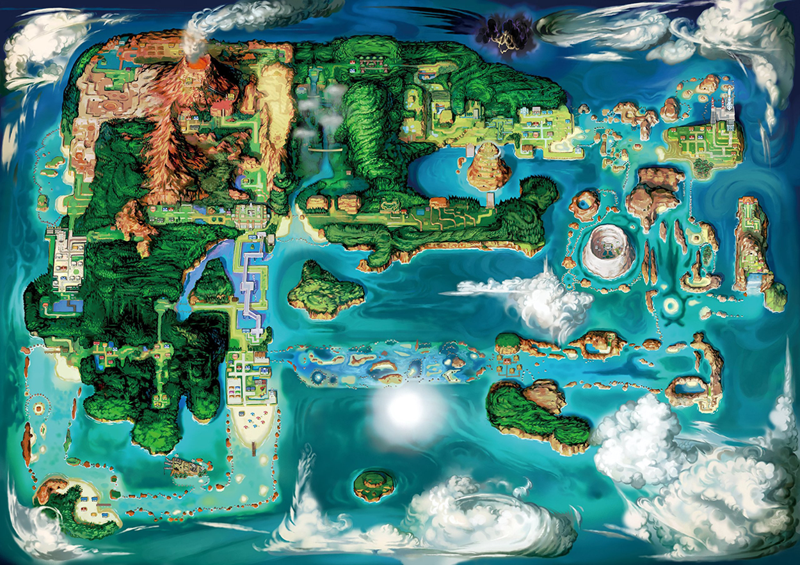

Game Boy Advance · 2002

Treecko
Torchic
Mudkip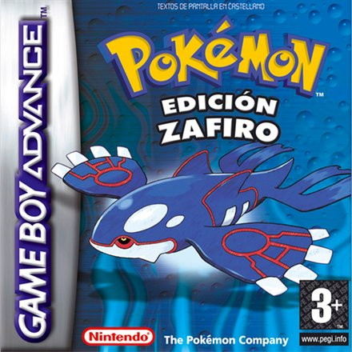
Game Boy Advance · 2002
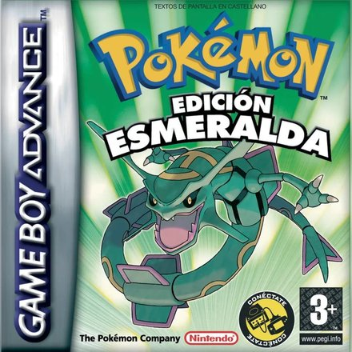
Game Boy Advance · 2004
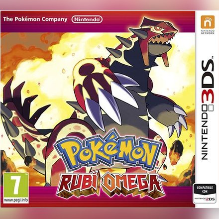
Nintendo 3DS · 2014
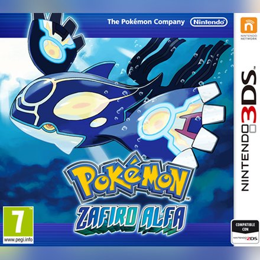
Nintendo 3DS · 2014
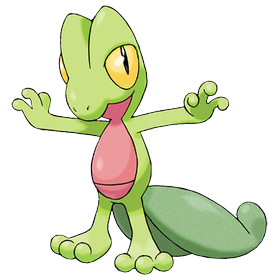
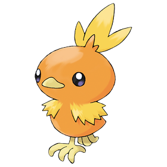
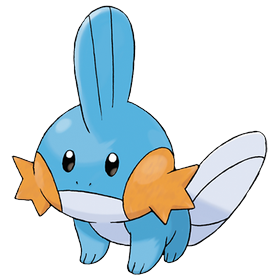